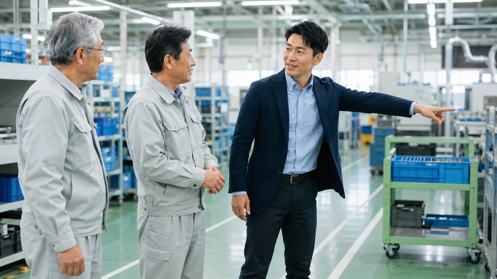

この記事の要点
- 腰痛が多い業種：厚生労働省のリーフレットでは、陸上貨物運送事業で腰痛により毎年500〜600人が4日以上休業していると示されています。
- 荷役の負担を減らす：人力で扱う重量の目安を決め、超える荷は2人以上や台車・機械で扱います。持ったまま腰をひねらない動作を周知します。
- 運転と荷役をつなぐ：座席を調整し、長時間運転の後は小休止やストレッチをしてから荷を扱う手順にします。
- 荷主と分担する：荷役作業の災害の多くは荷主先で起きています。台車の用意や重い荷の補助などを荷主と話し合います。
この記事が役立つ方
- 運送会社・倉庫会社で、安全衛生や労務を担当している方
- ドライバーや倉庫作業員の腰痛による休業が続き、対策を見直したい方
- 自社の物流部門や倉庫で、荷の積み卸しや仕分けを行っている会社の担当者の方
運送・倉庫業で腰痛が多いのはなぜか
厚生労働省の「陸上貨物運送事業における腰痛の予防」のページでは、陸上貨物運送事業の腰痛の発生率が全業種の平均を大きく上回っていること、職場の腰痛は長期的には減ってきたものの、運輸交通業や貨物取扱業では近年減少が見られないことが示されています。同省のリーフレット「重量物取扱いや運転業務による腰痛を予防しましょう」では、陸上貨物運送事業で腰痛により毎年500〜600人が4日以上休業していること、年齢別では40歳未満の発生率が高いことが紹介されています。
同じリーフレットには、中腰で商品を持ち上げた、荷物を持ったまま腰をひねった、腰に違和感があるまま長距離を運転して悪化した、といった事例が載っています。荷役作業では中腰・前かがみ・ひねりが重なりやすく、ドライバーは長時間座った姿勢から急に重い荷を扱うことになるため、腰への負担が大きくなります。
また、厚生労働省の「陸上貨物運送事業における荷役作業の安全対策ガイドライン」の案内資料では、荷役作業の労働災害の3分の2は荷主先で発生し、そのうち8割は貨物自動車の運転者が被災しているとされています。運送会社の中だけでなく、荷主先での作業も含めて考える必要があります。
荷役作業では、何から見直せばよいですか？
厚生労働省の「職場における腰痛予防対策指針」とリーフレットが示す重量物取扱いの考え方をもとに、荷役作業で見直したい項目を整理しました。
| 項目 | 見直す内容の例 |
|---|---|
| 人力で扱う重量 | 常時人力のみで扱う重量は、満18歳以上の男性で体重のおおむね40％以下、女性で24％以下が目安。超える荷は身長差の少ない2人以上で扱う。社内の上限（例：流通業では10kg程度とする例）を決める |
| 重量の表示 | 重い荷や重心が偏った荷に、重量や注意を表示して、持つ前に分かるようにする |
| 台車・機械 | 台車、ロールボックスパレット、昇降式の作業台、フォークリフトなどを使える場面を増やし、持ち上げる回数を減らす |
| 作業の高さと動線 | 床から直接持ち上げない置き方、運ぶ距離が短くなる配置、人力での階段の昇り降りを避ける動線にする |
| 作業時間と休憩 | 同じ作業が長時間続かないよう、休憩や作業の組み合わせを決める |
厚生労働省のページでは、倉庫内作業で午前・午後それぞれ10分以上の休憩を取り、休憩中は入荷作業を止めている企業の取組も紹介されています。休憩を「取ってよい」と伝えるだけでなく、取れる仕組みにすることがポイントです。
荷物の持ち方で、従業員に何を伝えればよいですか？
リーフレットと指針が示す持ち方を、朝礼や掲示で使える形にまとめました。
- 荷に身体を近づけ、重心を低くする
- 床の荷は片足を少し前に出し、膝を曲げて腰を落として抱え、膝を伸ばして立ち上がる
- 持ち上げる前に呼吸を整え、お腹に力を入れる
- 荷を持ったまま腰をひねらない。向きを変えるときは足を踏みかえる
- 重いと感じた荷は無理に一人で持たず、2人以上で扱うか、台車・機械を使う
動作の工夫だけで負担を減らすには限りがあります。重量の上限、台車や機械の配置、作業台の高さといった「持たずに済む・持つ量を減らす」工夫と組み合わせることが大切です。
ドライバーの長時間運転には、どう対策すればよいですか？
リーフレットでは、車両運転の腰痛対策として、座面と背もたれの角度を調整して腰と背中を支えられるようにすること、振動を抑える座席やクッションを使うこと、運転時間を管理して適宜休ませることが示されています。さらに、長時間運転した後に重量物を扱う場合は、小休止・休息やストレッチを行ってから作業させることとしています。
| タイミング | 内容の例 |
|---|---|
| 乗車前 | 座面の高さ・前後位置・背もたれの角度を、腰と背中が支えられる位置に合わせる |
| 運転中 | 休憩のたびに車を降りて歩き、腰や股関節を伸ばす |
| 到着後・荷役前 | すぐに重い荷を持たず、短いストレッチや足踏みで体を動かしてから作業する |
| 荷役中 | 荷台の昇り降りは昇降設備やステップを使い、飛び降りない |
荷台からの墜落・転落も荷役作業の大きな危険です。厚生労働省のリーフレット「トラックでの荷役作業時における安全対策が強化されます」のとおり、令和5年10月1日から、昇降設備の設置義務の対象が最大積載量2トン以上の貨物自動車に広がり、保護帽の着用義務の対象も拡大されました。テールゲートリフターを操作する作業者には、令和6年2月1日から特別教育が必要になっています。腰痛対策とあわせて確認しておきましょう。
荷主先での荷役は、どう話し合えばよいですか？
荷役作業の安全対策ガイドラインの案内資料では、荷主等に対して、荷役作業の担当者を指名すること、台車等を用意して機械・道具を使った荷役を心がけること、荷姿や荷の重量について作業者の負担が軽くなるよう配慮すること、運送事業者の労働者が重い荷を扱う場合は荷主等の労働者に作業を補助させることなどを求めています。運送事業者には、荷役などの付帯業務について書面で契約し、役割分担を明確にすることが示されています。
- 荷主先ごとに、誰がどこまで荷役を行うかが書面で決まっている
- 荷主先に台車やフォークリフトなど、手で持たずに運べる用具がある
- 重い荷や持ちにくい荷姿について、荷主と改善を話し合ったことがある
- 長い荷待ちの後に急いで荷役をする状況が続いていないか把握している
健康診断と教育は、何をすればよいですか？
リーフレットでは、重量物を取り扱う作業に常時従事する労働者に対し、配置する際と、その後6か月以内ごとに1回、腰痛の健康診断を行うこととしています。また、ストレッチを中心とした腰痛予防体操を行わせることも示されています。指針では、作業に配置する際などに、腰痛の発生要因や予防の方法などについて労働衛生教育を行うこととしています。
健康診断で腰痛の訴えがあった人や、すでに痛みやしびれがある人は、体操を含めて無理をさせず、医療機関への相談を優先してもらってください。職場全体の腰痛対策の進め方は、職場の腰痛対策は何から始めるかを解説した記事にまとめています。
外部の専門家に依頼すると、何をしてもらえるか
プライズネス健康経営サポートでは、理学療法士が倉庫や荷役の現場を訪問し、積み卸しや仕分けの動作、作業台の高さや動線、台車などの使い方を確認したうえで、従業員向けの腰痛予防研修（講義と実技）や、運転前後・休憩中に行える体操・セルフケアの指導を行います。現場で見つかった負担の大きい作業を、改善の優先順位とあわせて整理することもできます。内容はサービス内容、費用の目安は料金プランでご確認いただけます（例：単発セミナー55,000円〜、職場訪問評価132,000円〜、定期サポート月額88,000円〜）。なお、本サービスは医療行為ではなく予防のための支援です。
荷役と運転の負担を、現場で一緒に確認しませんか
「ドライバーの腰痛による休業が続いている」「倉庫の作業手順を見直したいが、どこから手をつければよいか分からない」という段階からご相談いただけます。まずは職場の腰痛リスクを3分でセルフチェックし、その結果をもとに無料相談をご利用ください。
よくある質問
運送業・倉庫業で腰痛が多いのはなぜですか？
荷の積み卸しや仕分けで、中腰や前かがみの姿勢のまま重い荷を持ち上げたり、持ったまま腰をひねったりする場面が多いためです。ドライバーは長時間座ったまま運転した直後に荷役を行うことも多く、腰に負担がかかりやすい条件が重なります。厚生労働省のリーフレットでは、陸上貨物運送事業で腰痛により毎年500〜600人が4日以上休業していると示されています。
人力で持つ荷物の重さに目安はありますか？
厚生労働省のリーフレットでは、常時人力のみで取り扱う重量は、満18歳以上の男性で体重のおおむね40％以下、女性で24％以下とし、これを超える場合は身長差の少ない2人以上で扱うこととしています。流通業では10kg程度に設定している例もあると紹介されています。重い荷の重量を表示し、台車や機械を使える場面を増やすことも大切です。
長時間運転した後の荷卸しで気をつけることは？
厚生労働省のリーフレットでは、長時間運転した後に重量物を扱う場合は、小休止・休息やストレッチを行ってから作業させることとしています。運転席を降りてすぐに重い荷を持たないよう、到着後に体を動かす時間を手順に組み込んでおくとよいでしょう。
荷主先での荷役作業は、運送会社だけで対策すればよいですか？
厚生労働省の荷役作業の安全対策ガイドラインでは、荷役作業の災害の3分の2は荷主先で起きているとされ、荷主等にも、荷役作業の担当者の指名、台車等の用意、荷姿や荷の重量への配慮、重い荷を扱う際の作業の補助などを求めています。運送会社だけで抱えず、荷主と役割分担を話し合うことが大切です。
プライズネスに依頼すると何をしてもらえますか？
理学療法士が倉庫や荷役の現場を訪問し、積み卸しや仕分けの動作、作業台の高さや動線などを確認したうえで、腰痛予防の研修（講義と実技）や、運転前後・休憩中に行える体操・セルフケアの指導を行います。費用の目安は単発セミナー55,000円〜、職場訪問評価132,000円〜です。医療行為ではなく予防のための支援で、痛みやしびれなどの症状がある方には医療機関への相談をおすすめしています。
関連する記事
この記事は、公的機関などの公開資料をもとにAIを活用して作成しています。制度や数値は変わることがあるため、ご判断の際は出典の最新情報をご確認ください。医療上の判断が必要な症状については医療機関にご相談ください。
出典・参考：
厚生労働省「陸上貨物運送事業における腰痛の予防」
厚生労働省・都道府県労働局・労働基準監督署「重量物取扱いや運転業務による腰痛を予防しましょう」
厚生労働省「職場における腰痛予防対策指針」（解説を含む）
厚生労働省「陸上貨物運送事業における荷役作業の安全対策ガイドライン」のご案内
厚生労働省・都道府県労働局・労働基準監督署「トラックでの荷役作業時における安全対策が強化されます」
（いずれも2026年10月23日確認）